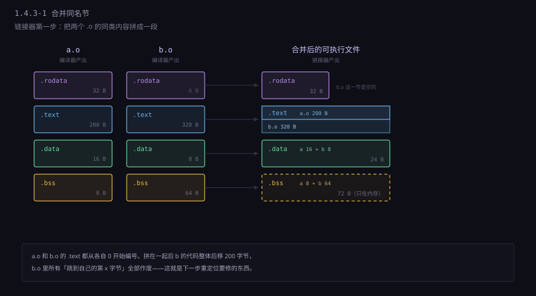
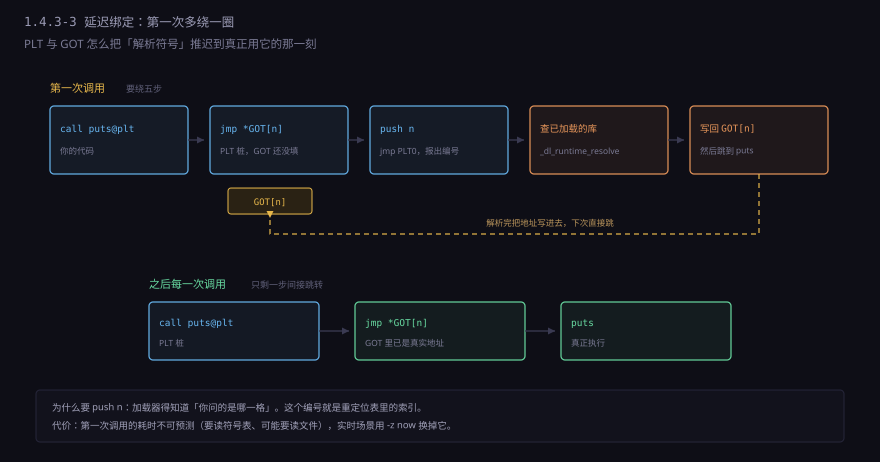
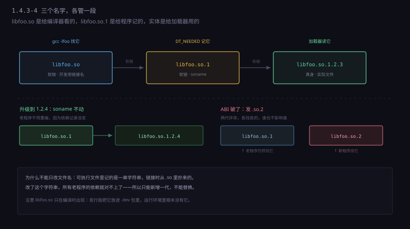
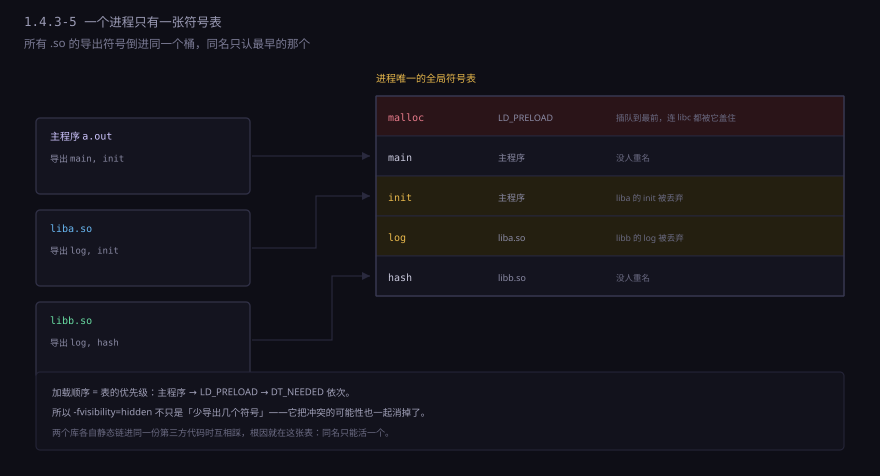

约 0.9 万字 · 5 张图 · 读完你能说清 .o 文件里到底装了什么，
链接器凭什么能把一堆碎块拼成一个能跑的程序，
以及「换了台机器就报 cannot open shared object file」到底是哪一环断了
.o 文件——里面有代码，有数据，
但每个跳转、每个地址都还是空的，写着「此处待填」。
填这些空、并把几十上百个 .o 和系统库缝在一起的，
是链接器 ld。
它是整条工具链里最不出声的一环：平时不报错你就感觉不到它存在，
一出错就是 undefined reference、GLIBC_2.34 not found
这种让人发懵的话。
这一节把它拆开看：链接器只做三件事，
但这三件事决定了你的程序能不能启动、能不能换机器、能不能打补丁。
先建立最基本的图像。gcc -c hello.c 出来的 hello.o，
不是「一堆指令」，而是一个分格的容器。
Linux 上这个容器叫 ELF，Windows 上叫 PE/COFF，
叫法不同，装的东西几乎一样：
| 节名 | 装什么 | 占文件空间吗 |
|---|---|---|
.text | 机器码 | 占 |
.rodata | 只读数据：字符串字面量、const 表 | 占 |
.data | 初始化过的全局和静态变量（非零） | 占 |
.bss | 没初始化或初始化为零的全局和静态变量 | 不占，只记大小 |
.symtab | 符号表：这个文件定义了谁、引用了谁 | 占 |
.rela.text | 重定位表：.text 里哪几个字节等着填 | 占 |
.debug_info | 调试信息，只在加 -g 时出现 | 占，且很大 |
.bss 那行值得停一下。
你写 int buf[1000000];，编译出来的 .o 不会因此变大——
.bss 在文件里只是一个「本段需要 4000000 字节，全填零」的记号。
程序加载时内核直接给你一块清零的页，不用从磁盘读四兆的零。
这是「零」在可执行文件里唯一被特殊对待的地方。
相比之下 int buf[1000000] = {1}; 会老老实实占四兆，
因为它得把第一个 1 和后面 999999 个 0 都写进文件。
链接之后，这些节被拼成一个可执行文件。用 readelf -S 能看到节，
用 readelf -l 能看到段（segment）——
节是给链接器看的，段是给加载器看的，
一个段通常由好几个节合并而成，比如「只读可执行段」里装着 .text 和 .rodata。
readelf -S hello.o # 看节
readelf -l hello # 看段（加载器视角）
size hello # 一句话看 text/data/bss 各多大
.o 里各有一份 .text，链接后变成一段连续的代码；两份 .data 拼成一份，两份 .bss 只是尺寸相加。注意合并之后，原来各自从 0 开始编的偏移全都不对了——这就是下一步必须重定位的原因。
把链接器想象成一个非常笨的装配工。它不做语法检查，不理解你的函数在干什么，
甚至不知道 printf 的第一个参数是格式串。它只会：
.o 都带一张「我引用了谁」和「我定义了谁」的清单，
链接器把这些清单对账，保证每个被引用的名字都能在某个地方找到定义。.text 里那些「此处待填」的字节，填成最终地址（或地址的相对偏移）。
三件事里，只有第二件会跟你吵架。
合并和重定位是机械工作，符号解析才是所有链接错误的来源。
因为「符号」就是名字，而名字是软件里最不牢靠的东西：
它没有类型，没有签名，没有参数个数，
在 C 的链接层面，int foo(int) 和 double foo(char*, long)
是同一个符号，都叫 foo。
这就是链接和编译最根本的分工：
编译器管语义，链接器只管名字和地址。
编译器知道你调用 foo 时传了两个参数，它会按 ABI 把参数放进寄存器；
链接器只知道「有个叫 foo 的东西需要用」，它把地址填上就完事了。
两边对不上，程序会跑，只是跑出来的结果是垃圾。
在 .o 文件里，函数调用长这样：
000000000000000e: e8 00 00 00 00 call 13 <main+0x13>
e8 是 call 的编码，后面四个字节是相对偏移。
现在这四个字节全是 0，意思是「调用紧挨着的下一条指令」——显然不对。
为什么留 0？因为汇编器根本不知道 puts 最后会在哪。
它可能在同一个 .o 里，可能在另一个 .o 里，
可能在静态库里被抽出来，也可能在某个 .so 里——
这些都要等链接器决定布局之后才知道。
所以汇编器干的事是：把 0 填进去，然后在 .rela.text 里留一条记录：
「偏移 0x0f 处的 4 个字节，需要一个指向 puts 的相对地址，类型 R_X86_64_PLT32」。
readelf -r hello.o
Relocation section '.rela.text':
Offset Info Type Sym. Name + Addend
00000000000f 000500000004 R_X86_64_PLT32 puts - 4
链接器做完布局，知道 puts 在虚拟地址 0x401030，
而这条 call 指令在 0x401126，下一条指令在 0x40112b。
于是把 0x401030 - 0x40112b 算出来，写进那四个字节。
填的是相对差值，不是绝对地址——
这样整段代码被搬到内存里任何位置，这条调用依然正确。
只在同一个可执行文件内部，相对寻址就够了。 一旦目标是外部动态库，情况就变了： 库加载到哪是运行时才决定的，链接时不可能算出偏移。 这时候链接器只能再留一个空——但这个空不能留在代码里， 否则每个进程都得改自己的代码段，那一份物理内存就没法共享了。 后面第 8、9 节讲的就是它怎么绕过这个矛盾。
还有一类重定位是数据用的。比如：
char *msg = "hello";
int (*fn)(const char *) = puts; /* 函数指针 */
这两个变量的内容是地址，而且必须是运行时的绝对地址。
它们的重定位类型是 R_X86_64_64（填一个 64 位绝对地址），
发生在 .data 里而不是 .text 里。
数据段每个进程本来就是私有的，改它不破坏共享——
这是理解「为什么代码不能有绝对地址、数据可以有」的关键分界。
nm 是最能说明问题的一个工具。它把符号表打出来，每个符号前面一个字母：
| 字母 | 含义 | 典型来源 |
|---|---|---|
T / t | 代码段里的符号，大写全局、小写局部 | 函数 |
D / d | 已初始化的数据 | int x = 1; |
B / b | 未初始化的数据 | int x; |
R / r | 只读数据 | 字符串字面量 |
U | 未定义：这个文件引用了它，但没定义 | 调用了 puts |
W | 弱符号 | __attribute__((weak)) |
U 是链接器最关心的。它把每个 .o 的 U 收集起来列成一张欠账，
再用所有输入里的 T/D/B 去还。
还完还有欠账，就是那句 undefined reference to 'xxx'。
两个细节值得记住。
第一，static 函数在小写那一栏。
它变成了 LOCAL 绑定，链接器不会拿它去还别人的账，
也不会因为它和别的文件里的同名函数冲突——这就是「内部链接」的真实含义，
不是什么「作用域限制」的抽象说法，而是它的名字压根没进全局对账表。
第二，C++ 的名字是改过的。
因为 int add(int,int) 和 double add(double,double)
在 C 的符号层面必须是两个名字，C++ 编译器就把参数类型也编进名字里：
namespace ns { int add(int, int); }
# 实际符号名
_ZN2ns3addEii
# 逐段拆开
_Z 前缀：这个名字被修饰过
N 嵌套名开始
2ns 命名空间 ns（2 是「ns」的长度）
3add 函数名 add（3 是「add」的长度）
E 名字结束
ii 参数类型：int, int
这套规则叫 name mangling。它的存在解释了两个常见现象：
一是 nm 看 C++ 程序的输出全是乱码一样的 _ZN...，
要用 nm -C 或 c++filt 还原；
二是 C++ 调用 C 库必须写 extern "C"——
不是「告诉编译器这是 C 的」，而是「别改这个名字」，
因为对方库里那个符号就叫 puts，不叫 _Z4putsv。
顺带说清一件事：mangling 只编码名字和参数类型， 不含返回类型，也不含参数名。 这不是疏忽，是因为 C++ 允许「只看调用形式」就唯一确定重载—— 而返回值不参与重载决议。代价是两个返回类型不同的同名同参函数没法共存， 这也正是「不能仅靠返回值重载」这条规则的底层原因。
多个 .o 打包成 .a，用的是 ar。
它和 tar 是同一个年代的东西，格式简单到你能手写解析：
gcc -c add.c mul.c
ar rcs libmath.a add.o mul.o
ar t libmath.a # 列出成员：add.o mul.o
.a 就是「若干个 .o 加一张索引表」。
索引表记录「哪个符号在哪个成员里」，让链接器不用把整个包解开就能查。
注意它不是压缩的，.a 和里面 .o 的总和差不多大。
链接器处理静态库的方式有个专门的名字：按需抽取。
它不会把 libmath.a 里的所有成员都塞进你的程序，
而是扫一遍，看当前还有哪些 U 没还，
只把能还账的那些成员抽出来。
你只用了 add，mul.o 就完全不会进你的可执行文件。
这个机制的副作用，是链接顺序变得敏感。见下一节。
如果你写过 gcc main.o -lm -lmath 却报 undefined reference to 'add'，
而把顺序换成 gcc main.o -lmath -lm 就好了，那你撞上的就是这个：
链接器从左到右扫一遍输入，遇到 .o 就无条件收下它的定义和欠账；
遇到 .a 时，只解决「此刻已经存在的欠账」。
扫过去就不再回头。
# 反例：-lmath 在 main.o 左边
ld ... -lmath main.o
↑ 此时欠账表是空的，libmath.a 什么都不抽
↑ 现在欠账表里多了 add，但已经扫过去了
# 正确
ld ... main.o -lmath
↑ 欠账表有了 add
↑ libmath.a 抽出 add.o，欠账清空所以规则是：被依赖的放右边，依赖别人的放左边。 这和直觉相反，因为人习惯「先拿工具再干活」。 但链接器是流水线式的，它只在看到需求之后才去找供给。
两个库互相依赖时，一遍扫不过去，得写两遍：
gcc main.o -lfoo -lbar -lfoo # 手工重复
gcc main.o -Wl,--start-group -lfoo -lbar -Wl,--end-group # 或者让链接器反复扫
--start-group 的意思是「这一组里的库反复扫，直到没有新的欠账被还上为止」。
代价是变慢，所以只在真有循环依赖时用。
顺带一个反方向的开关：--whole-archive。
它让链接器「把一个 .a 里的所有成员全都塞进来，不管有没有用到」。
什么时候需要？当库里有些东西没有任何符号引用，但必须存在时——
典型是静态注册表：某个 .o 里只有一个全局对象的构造函数，
靠它自己在启动时往注册表里塞一条记录，你的代码从头到尾没提过它的名字，
按需抽取就会把它丢掉，于是「注册失效」。
gcc main.o -Wl,--whole-archive -lplugins -Wl,--no-whole-archive -lm
那个 --no-whole-archive 别忘了写，它的作用是把开关关掉，
否则后面的 libm 也会被整个拉进来，程序瞬间膨胀。
静态链接的后果很直接：如果系统里有 50 个程序都用了 libc， 磁盘上就有 50 份 libc 的副本，内存里也有 50 份——哪怕它们一模一样。
动态库解决的就是这个。思路简单到有点粗暴： 把库代码单独放一个文件，运行时把它映射进进程的地址空间，谁用谁映射。 物理内存里只有一份代码页，每个进程的页表都指向它。 因为代码页是只读的、位置无关的，共享不会出问题。
做出来只要加 -shared -fPIC：
gcc -shared -fPIC -o libmath.so add.c mul.c
gcc main.c -L. -lmath -Wl,-rpath,'$ORIGIN'
生成的可执行文件里不会多出库的代码，只多一条记录：
「我依赖一个叫 libmath.so 的东西」。
这条记录在 ELF 里是 DT_NEEDED，用 readelf -d 能看见。
readelf -d ./main | grep NEEDED
0x0000000000000001 (NEEDED) Shared library: [libmath.so]
0x0000000000000001 (NEEDED) Shared library: [libc.so.6]
真正把库加载进来的是另一个程序：动态加载器
/lib64/ld-linux-x86-64.so.2。
可执行文件自己的 PT_INTERP 段里写着它的路径，
内核执行时先启动它，由它去读依赖、映射库、做完所有重定位，再把控制权交给程序的入口。
这个链条还解释了「main 之前谁在跑」。
程序的真正入口不是 main，是 _start——
它来自 crt1.o，是链接时被自动拼进去的。
_start 把 argc/argv 整理好，
调用 __libc_start_main，后者才去调你的 main，
返回后再走 exit、跑 atexit 注册的函数、刷缓冲区。
你的程序从来不是从 main 开始的，是从三个 crt 文件开始的。
共享代码页有个硬性要求：这份代码在任何进程里、被映射到任何地址，都必须能正确运行。 因为每个进程的地址空间布局不一样，库被放哪由加载器临时决定 （还要考虑到 ASLR 每次启动都变）。
如果代码里写了绝对地址，比如：
mov edi, 0x402010 # 字符串的绝对地址
call 0x401030 # puts 的绝对地址那么这份代码只能在「字符串确实在 0x402010、puts 确实在 0x401030」的进程里跑。 换一个进程、换一次启动，地址全变，代码就得重写。 重写代码意味着代码页变成私有且可写—— 共享没了，安全性也没了。
所以动态库必须用 -fPIC 编译（Position Independent Code）。
x86-64 有一件趁手的工具：RIP 相对寻址。
指令可以写「距离当前指令指针 +N 字节的那个地址」，
这样不管代码被搬到哪，相对距离都不变：
lea rdi, [rip+0x2f41] # 指向本模块自己的数据，位置无关
mov rax, [rip+0x2f52] # 从 GOT 里读一个地址
自己的数据好办，相对距离在链接时就定了。
麻烦的是外部符号：puts 在另一个 .so 里，
那个 .so 被映射到哪，自己的模块并不知道，
而且它还可能被别的同名符号顶替（符号介入，interposition）——
这是动态库的一个特性，不是 bug。
所以外部符号的地址不能事先算好，必须运行时查表。
那张表就是 GOT（Global Offset Table）。
.data 段里划出一片格子，每格 8 字节，装一个外部符号的地址。
代码里所有对外部符号的引用，都写成「从 GOT 的第 n 格读」。
数据段是每个进程私有的，改它不影响共享；
加载器把真实地址填进这些格子，代码本身一个字节都不用动。
ebx，
每次函数开头先调一段 __x86.get_pc_thunk.bx 把当前 eip 取出来，
再算出 GOT 在哪。你在 32 位反汇编里看到这一串，就知道它是 PIC 的产物。
x86-64 有了 RIP 相对之后，这段仪式就消失了。
GOT 解决了「地址放哪」的问题，又带出一个新的浪费： 如果程序启动时把所有外部符号都解析一遍，而大部分函数这次运行根本不会被调用， 那些解析就白做了。 于是一个叫 PLT（Procedure Linkage Table）的东西加进来，把解析推迟到第一次调用。
PLT 是一小段一小段的桩代码，每个外部函数对应十几字节：
puts@plt:
jmp [GOT + n] # 第一次：GOT[n] 指向下一行
push n # 把「我是第 n 号」压栈
jmp PLT0 # 跳到公共入口，去解析
PLT0:
push [GOT + 8] # link_map
jmp [GOT + 16] # _dl_runtime_resolve
_dl_runtime_resolve 是动态加载器里的函数。它按编号查符号、
在已加载的库中搜索、算出真实地址，
然后把地址写回 GOT[n]，
最后跳到目标函数执行。

jmp [GOT]，开销和普通间接调用一样。这个设计用「一次性的慢」换掉了「启动时全解一遍的慢」——对调用了上千个函数但只用到几十个的程序，这买卖很划算。三个后果值得记。
一、第一次调用的开销是不可预测的。 它要遍历已加载的库、比对字符串、可能还要读文件。 在延迟敏感的代码里（音频、实时控制），第一次调用的抖动比稳态开销更麻烦。 解决办法是关掉延迟绑定：
gcc main.c -Wl,-z,now # 链接期：启动时全解析
LD_BIND_NOW=1 ./main # 运行期：临时的同样效果
二、-z now 还有一个安全收益。
GOT 在解析完成后就再也不用改了，可以设为只读。
配合 -z relro（GNU_RELRO 段），加载器在解析结束后把 GOT 所在的页
mprotect 成只读。
这样一来，「覆写 GOT 里某一格，让下次调用跳到我的代码」这条老攻击路径就断了。
默认 relro 是部分保护，-z relro -z now 才是完整保护——
checksec 里那个 Full RELRO 说的就是这个。
三、PLT 让「函数指针」和「直接调用」走了不同的路。
你写 void (*p)(const char*) = puts;，
取到的是 puts 的真实地址（从 GOT 里读出来的），
直接 call p 就绕过了 PLT。
所以同一个函数，「直接调用」和「通过指针调用」的第一次开销可能不一样，
性能分析里偶尔会看到这种诡异差异。
现在解释那个最常见的运行时错误：
error while loading shared libraries: libfoo.so.1:
cannot open shared object file: No such file or directory
注意它要的是 libfoo.so.1，不是 libfoo.so。
这个差别是整套版本机制的核心。
一个正经的动态库在磁盘上是三个名字：
| 名字 | 角色 | 谁在用 |
|---|---|---|
libfoo.so.1.2.3 | 真正的文件 | 包管理器 |
libfoo.so.1 | soname，指向实体 | 可执行文件的 DT_NEEDED |
libfoo.so | 开发用链接名，指向 soname | gcc -lfoo |
DT_NEEDED 里记的是 soname，不是文件名。
这个 soname 是编译库的时候用 -Wl,-soname,libfoo.so.1 写进库里的，
一旦写定，后面所有链接它的程序都用这个字符串作为依赖标识。

-lfoo 找 libfoo.so，链接器读它里面的 soname 写进依赖，运行时加载器按 soname 找实体。升级到 1.2.4 时只换实体、把 .so.1 重新指过去，所有程序不用重编。一旦 ABI 破了，就发 .so.2，两代并存，各找各的。于是「升级库」这件事被拆成了两种情况：
只加接口、不改已有接口 → soname 不变。
装 libfoo.so.1.2.4，把 libfoo.so.1 这个软链指过去。
所有老程序无感，因为它们只记着 libfoo.so.1。
这就是「向后兼容」在文件系统层面的样子。
改了已有接口（删函数、改参数、改结构体布局）→ soname 变 .so.2。
新老两个版本同时装，各自被各自的程序找到。
老程序继续用 .so.1，不会因为升级而崩。
这不是「讲礼貌」，是唯一能同时满足两边的做法——
因为符号层面没法表达「这个函数签名变了」。
「名字里看不出接口变没变」这个根本缺陷，后来用另一套机制补了一部分： 符号版本。glibc 是最大的用户，你会在报错里见到它：
./main: /lib/x86_64-linux-gnu/libc.so.6:
version `GLIBC_2.34' not found (required by ./main)
readelf -V ./main | head -20 # 看它要求哪些版本
这条错误的含义很精确：你在新系统上编译，拿到老系统上跑。
编译时 pthread_create 在 glibc 2.34 里被并进了 libc，
符号带上了 GLIBC_2.34 的版本标签；
老系统的 libc.so.6 里只有 GLIBC_2.2.5 那一版，标签对不上，直接拒绝启动。
符号版本让同一个 .so 里可以同时存在「老版 foo」和「新版 foo」，
各自带不同标签，老程序绑老的、新程序绑新的。
这是 soname 之外的第二层保险，通常只在 libc 这种「必须极度稳定」的库里用。
ldd ./main 看依赖找不找得到（注意 ldd 实际上是运行加载器，对不可信程序有风险，可以用 objdump -p | grep NEEDED 替代）；
readelf -d ./main | grep -E 'NEEDED|RPATH|RUNPATH' 看它去哪找；
LD_DEBUG=libs,bindings ./main 把加载器每一步都打出来——这个最有用，它会把「我搜了哪些目录、最后选了哪个文件」全列出来。
到这里为止，符号一直是个「名字」。但动态链接里，符号还有另一个身份：
一张全局作用域里的占位。
程序启动时，加载器把所有 .so 的导出符号汇成一张表，
同名只留一个，先来的赢。
之后任何一次符号解析，都在这张表里找。

.so 的导出符号都倒进同一个桶里，同名只认最早的那个。这解释了为什么 LD_PRELOAD 能拦截 malloc（它排在最前面），也解释了为什么两个库各自静态链进同一份第三方代码时，会莫名其妙地互相踩——它们导出的是同名符号，只有一个能活。
而默认情况下，你的库把一切都导出了。
只要不是 static，所有全局函数和全局变量都会进 .dynsym——
包括那些只在库内部调用、你根本没打算给别人用的辅助函数。
nm -D libmath.so | head # 看动态符号表（真正的导出表）
readelf --dyn-syms libmath.so这件事有三个代价，一个比一个隐蔽。
一、加载变慢、体积变大。 导出表要建哈希表，符号越多，加载器查得越久、占的内存越多。 一个中大型 C++ 库不加控制，导出几万个符号是常事， 其中绝大部分是模板实例化出来的内部实现。
二、你会被别人的同名符号顶掉，或者顶掉别人。
这是最恶心的一种。假设你的库内部有个辅助函数叫 init，
另一个八竿子打不着的库也有个 init。
两个库都被加载进同一个进程，全局表里只有一个 init——
谁先加载谁赢，另一个库的内部调用会跳到你的 init 上，
参数含义完全不同，于是行为诡异，且极难定位。
这类 bug 的表现通常是「单独跑没问题，装到某个客户环境就崩」。
三、你不敢重构。 内部函数一旦导出，就有人可能链接它。 你把它改名或者删掉，别人的程序就起不来。 于是「内部实现」事实上变成了「公开接口」，只是没人写进文档。
标准解法只有一行编译选项：
gcc -shared -fPIC -fvisibility=hidden -o libmath.so add.c mul.c这一行的意思是：「默认不导出，想让谁可见，逐个标注」。然后在头文件里：
#define API __attribute__((visibility("default")))
API int add(int a, int b);
API void mul_reset(void);
注意 hidden 和 static 不是一回事，别混。
static 是文件内可见，跨 .o 就用不了；
hidden 是模块内可见，库里的 add.o 能调 mul.o 里的东西，
但外面看不到。
这才是「内部函数」想要的效果——static 往往做不到，因为要跨文件。
这个选项还有个附带好处：编译器知道某个符号不会被外部引用， 就能做一些原本不敢做的优化——不必再为「可能被顶替」保留一份间接跳转， 可以直接内联、可以直接算地址。 把符号藏起来，性能也会变好，这一点很多人不知道。
还有一个更粗的开关：-Wl,--exclude-libs,ALL。
它把「从静态库链进来的符号」全部隐藏，
典型场景是你静态链了某个第三方库进自己的 .so，
不希望它的符号污染全局表。
-Wl,-Bsymbolic，慎用。
它让库内部的调用优先绑定到自己，不参与全局竞争——
听起来正是你想要的，但它会破坏 C++ 的异常、RTTI 和单例语义：
同一个类的 typeinfo 出现两份，catch 就抓不住了。
需要「自己用自己的」时，先把符号藏起来，比开这个开关安全得多。
教科书式的答案通常是「静态体积大、动态体积小」，这个答案不够用， 因为它漏掉了真正让人纠结的那几条：
| 维度 | 静态 | 动态 |
|---|---|---|
| 部署 | 一个文件，拷过去就能跑 | 要保证目标机上有一整套匹配的库 |
| 启动速度 | 快，不用解析符号 | 慢一点，要加载、重定位、查符号 |
| 内存 | 每个进程各一份 | 代码页共享，只有数据各一份 |
| 打补丁 | 必须重新链接整个程序 | 换一个 .so，所有程序立刻受益 |
| 故障面 | 出错在编译期，跑起来就稳 | 出错在运行期，可能上线三个月后才炸 |
| 第三方库 | 许可证可能不允许静态链接 | 无此问题 |
那张表里最容易被低估的是「打补丁」和「故障面」，而这两条是相反的。
动态链接让安全更新变得极便宜——OpenSSL 出了漏洞，系统更新一个 .so，
机器上几百个程序一起修好。
但同一个特性也意味着：你的程序依赖一个你控制不了的外部文件。
它在你的测试机上是什么版本，在生产机上不一定是；你以为的接口，可能被另一个库抢先实现了。
所以老练的做法通常是混合，而不是二选一：
gcc main.c -static-libgcc -static-libstdc++ # C++ 运行时静态，系统库动态
gcc main.c -static # 全静态（glibc 全静态有坑，见下）
gcc main.c -Wl,-rpath,'$ORIGIN/lib' # 动态，但库跟着程序走
-static-libstdc++ 是常见选择：libstdc++ 的版本在各发行版之间差异大，
静态掉它能省很多「GLIBCXX_3.4.29 not found」；
而 libc 保持动态，因为它和内核、NSS、locale 有千丝万缕的联系。
说到 glibc 全静态，有个经典坑值得单独提：
静态链接的 getaddrinfo 在运行时会崩或者行为异常。
原因是 glibc 的域名解析走 NSS（Name Service Switch），
而 NSS 的模块（libnss_dns.so 之类）是运行时 dlopen 加载的动态库。
全静态的程序没有动态加载器，这条链路就断了。
所以「全静态」听起来最保险，实际在涉及网络和用户查询的程序里反而最不安全。
这一节最后要划清一条界线：链接成功不等于程序正确。 链接器只保证「名字对得上、地址填得对」，它不知道你在干什么。
一、它不检查类型。 在 C 里，两个文件这样写是能链上的：
/* a.c */ int compute(int x) { return x * 2; }
/* b.c */ double compute(double x); /* 声明不一样 */
printf("%f\n", compute(1.5)); /* 链接通过，结果错 */
编译器各自看到各自的声明，都觉得没问题；
链接器只看到一个叫 compute 的符号，对上就放行。
运行时参数按 double 塞进 xmm0，而函数体去 edi 里读整数——
读到的是垃圾。这类错误在 C 里非常难查，因为它不崩，只是算错。
二、它不检查「重复定义是否一致」。
multiple definition of 'x' 它会报，
但那是「两个 STRONG 符号撞了」。
如果其中一个是弱符号（__attribute__((weak))），或者来自 C++ 的 inline 函数，
它会随便挑一个，不吭声。
C++ 的 ODR（单一定义规则）就是靠程序员自觉的。
两个 .o 里各有一份 inline 函数的不同实现（比如因为宏不同），
链接器挑第一个，另一个被丢弃，程序行为取决于文件顺序。
构建系统稍微一动，bug 就换个样子出现。
三、它不检查你链接进来的东西会不会互相踩。
两个库各自定义了一个同名的全局变量，谁赢看顺序；
一个库里的 malloc 包装想拦截内存分配，结果被 libc 的抢先；
一个插件注册了和主程序同名的类……这些链接器统统不管。
动态链接的符号介入机制本来是给「替换实现」用的（比如用 LD_PRELOAD 做内存检查），
但它在同一个程序里就是一把双刃剑。
四、它不保证运行环境对得上。 链接成功只说明「我这台机器上能找到这些符号」。 换一台机器，库的版本、路径、ABI 都可能不同。 这也是为什么容器和静态二进制在部署领域重新流行起来—— 它们把「链接时看到的世界」和「运行时看到的世界」强行拉齐了。
把这一节和上一节连起来看： 编译器把语义压成了机器码，链接器把机器码缝成了文件。 到此为止，程序还是一个静态的、需要被操作系统加载才能活的东西。 下一节换个方向：如果根本不生成机器码，而是运行时一边读一边执行呢？ JavaScript 为什么能从「慢得没法用」变成「接近编译语言」，答案就在那条路上。
int buf[1000000]; 和 int buf[1000000] = {1}; 在 .o 文件大小上差多少？为什么？.rela.text 里记的是什么？为什么 call 后面填的是相对偏移而不是绝对地址？nm 输出里的 U 和 T 分别是什么意思？static 函数为什么是小写 t？_ZN2ns3addEii 拆开是什么？C++ 调 C 为什么要写 extern "C"？gcc main.o -lm -lmath 报 undefined reference 而换顺序就好了，为什么？--whole-archive 解决什么问题？-fPIC 到底在避免什么？为什么数据段可以有绝对地址而代码段不行？soname 是什么？为什么升级库时改它就能让新老程序共存？.bss，文件里只记「需要多少字节、全零」，不占空间；后者是 .data，第一个 1 和后面全部 0 都得真写进文件。U 是本文件引用了但没定义的符号（欠账），T 是代码段里定义的全局符号。static 函数是 LOCAL 绑定，名字不进全局对账表，所以小写。_Z 前缀 + N 嵌套 + 2ns（长度+名字）+ 3add + E 结束 + ii 两个 int 参数。写 extern "C" 是让编译器别改这个名字，因为对方库里的符号就叫 puts。-lm 时还没有任何欠账，库里什么都不抽；等看到 main.o 产生欠账，已经扫过去了。所以被依赖的放右边。--whole-archive 强制全量拉进来。-z now）。DT_NEEDED 记的是它而不是文件名。ABI 破了就把 soname 从 .so.1 改成 .so.2，两代文件并存，各自被各自的程序找到。